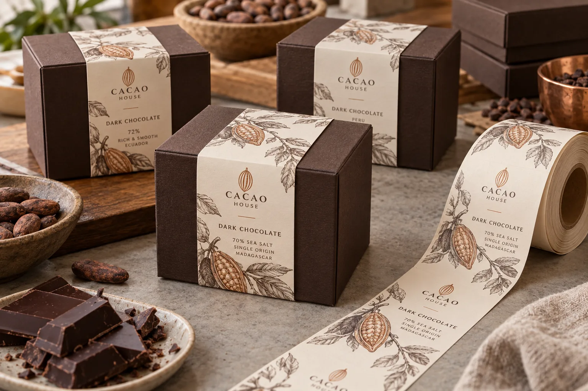

First decide what is actually being ordered
People use “belly band” for two different things. One is a paper strip wrapped around the box and secured to itself. The other is a pressure-sensitive label laid over a box or across a sleeve. I would settle that definition before a printer quotes rolls, because the adhesive location, fold allowance and application method are different.
Avery Dennison's chocolate-label material example shows the appeal of tactile premium paper. HERMA's custom-label checklist asks about cardboard, curvature and application method. Neither source guarantees a decorative material will survive every box fold or packing process.
A good band follows the finished box
Imagine a composite chocolatier using one dark rigid box for 70% and 85% bars. Changing a printed band is attractive because the base box stays common. But the strip must wrap the actual filled box, not a flat dieline. Board thickness, lid fit and tissue inside can change the perimeter. I would build a hand mockup of both varieties before setting the cut length.
Another composite gift packer wants a gold accent on a deep-colored band. I would check rubbing where boxes contact one another in transit. If a soft uncoated face scuffs too easily, a different finish may be wiser than adding more decoration. Premium is what the customer sees after shipping, not only at the press check.
Protect the opening and the information
Keep the product name, variety and variable lot field on an uninterrupted panel. If a strip crosses the lid seam, define whether it is meant to be removed, torn or left intact. The decorative band does not by itself establish tamper evidence. Check final required food information with the responsible team for the sales market and the complete package.
| Feature | Trial |
|---|---|
| Box perimeter | Measure the assembled filled pack |
| Fold | Look for cracking or spring-back |
| Opening | Confirm normal lid access |
| Finish | Rub and stack finished boxes |
Our buying view
Let the band do one job well
I would use the band to separate varieties and make the box feel considered. I would not force it to be a seal, an instruction sheet and a structural strap at once unless the finished pack proves those jobs work together.
Send a useful box sample
- Filled and closed box for each size.
- Desired band construction and hand or machine application.
- SKU artwork, finish and variable-data method.
- Opening, shipping and scuff expectations.
Compare chocolate flow-wrap labels for a flexible primary pack and gift-box paperboard labels for another rigid presentation format.
Frequently asked questions
Is a belly band the same as a pressure-sensitive label?
Not always. A paper band may wrap and fasten to itself; a separate pressure-sensitive label may hold or decorate it. Specify the construction.
Can one band work across different box depths?
Only after the perimeter and closure overlap of every assembled box have been measured.
Should the band seal the lid?
Only when opening behavior and any intended tamper function are designed and tested; decoration alone is not proof of tamper evidence.
Related buyer guides
Review your label specification
Send package photos, label dimensions, material details, quantity and application conditions. Include good and failed samples where possible so the discussion starts with evidence.